Classificação salarial via algorítmos de Machine Learning
Tópicos 2 — Modelagem com apoio computacional
Introdução
Neste trabalho, buscou-se estudar um conjunto censitário sintético com diversas características demográficas, com objetivo fim de entender a relação entre covariáveis o salário — variável esta que se encontra binarizada no conjunto de dados, sendo
- 0: Renda anual de até 50.000 dólares
- 1: Renda anual acima de 50.000 dólares
Os dados são públicos e podem ser acessados em Kaggle.
Preparação
Os dados disponíveis no Kaggle já haviam passado por algumas etapas de transformações, mas para o objetivo deste trabalho achei pertinente realizar mais algumas rotinas de transformações nas covariáveis
df$salary = factor(df$salary)
df = clean_names(df)
df$fnlwgt = df$fnlwgt/sum(df$fnlwgt)
df = df %>%
mutate(marital_status = factor(marital_status),
relationship = factor(relationship),
race = factor(race),
sex = factor(sex),
country = factor(ifelse(country == 'United-States',country,'Others')),
education = case_when(
education %in% c("Bachelors","Masters","Assoc-acdm",
"Assoc-voc","Doctorate","Prof-school") ~ "high_education",
.default = "low_education"),
education = factor(education),
occupation = case_when(
occupation %in% c("Adm-clerical", "Exec-managerial", "Prof-specialty", "Tech-support", "Sales") ~ "white_collar", # Ocupações que geralmente envolvem trabalho em escritório ou administrativo.
occupation %in% c("Craft-repair", "Farming-fishing", "Handlers-cleaners", "Machine-op-inspct", "Transport-moving") ~ "blue_collar", # Ocupações que envolvem trabalho manual ou técnico.
occupation %in% c("Other-service", "Priv-house-serv", "Protective-serv") ~ "services", # Ocupações no setor de serviços.
occupation %in% c("Armed-Forces","?") ~ "Others"),
occupation = factor(occupation),
civil_status = ifelse(marital_status %in% c('Never-married','Divorced','Separated', 'Widowed') | relationship %in% c('Not-in-family','Unmarried'),"Single","Non-single"),
civil_status = factor(civil_status),
workclass = case_when(
workclass %in% c("Federal-gov", "Local-gov", "State-gov") ~ "government",
workclass == "Private" ~ "private",
workclass %in% c("Self-emp-inc", "Self-emp-not-inc") ~ "self_employed",
workclass %in% c("Never-worked", "Without-pay") ~ "not_working",
workclass == "?" ~ "unknown"),
workclass = factor(workclass)
) %>%
select(-marital_status,-relationship)- Análise exploratória
Após as transformações, observamos em nossos dados 12 covariáveis de aspectos demográficos dos grupos populacionais bastante heterogêneos e de tamanhos desiguais, quando separado nos grupos de salário até 50 mil dólares anuais e acima de 50 mil dólares anuais.
| <50k | >50k | p.overall | |
|---|---|---|---|
| N=24720 | N=7841 | ||
| age | 34.0 [25.0;46.0] | 44.0 [36.0;51.0] | 0.000 |
| workclass: | <0.001 | ||
| government | 3010 (12.2%) | 1341 (17.1%) | |
| not_working | 21 (0.08%) | 0 (0.00%) | |
| private | 17733 (71.7%) | 4963 (63.3%) | |
| self_employed | 2311 (9.35%) | 1346 (17.2%) | |
| unknown | 1645 (6.65%) | 191 (2.44%) | |
| education: | 0.000 | ||
| high_education | 5981 (24.2%) | 4535 (57.8%) | |
| low_education | 18739 (75.8%) | 3306 (42.2%) | |
| education_num | 9.00 [9.00;10.0] | 12.0 [10.0;13.0] | 0.000 |
| occupation: | 0.000 | ||
| blue_collar | 8362 (33.8%) | 1700 (21.7%) | |
| Others | 1660 (6.72%) | 192 (2.45%) | |
| services | 3744 (15.1%) | 349 (4.45%) | |
| white_collar | 10954 (44.3%) | 5600 (71.4%) | |
| race: | <0.001 | ||
| Amer-Indian-Eskimo | 275 (1.11%) | 36 (0.46%) | |
| Asian-Pac-Islander | 763 (3.09%) | 276 (3.52%) | |
| Black | 2737 (11.1%) | 387 (4.94%) | |
| Other | 246 (1.00%) | 25 (0.32%) | |
| White | 20699 (83.7%) | 7117 (90.8%) | |
| sex: | 0.000 | ||
| Female | 9592 (38.8%) | 1179 (15.0%) | |
| Male | 15128 (61.2%) | 6662 (85.0%) | |
| capital_gain | 0.00 [0.00;0.00] | 0.00 [0.00;0.00] | 0.000 |
| capital_loss | 0.00 [0.00;0.00] | 0.00 [0.00;0.00] | <0.001 |
| hours_per_week | 40.0 [35.0;40.0] | 40.0 [40.0;50.0] | 0.000 |
| country: | <0.001 | ||
| Others | 2721 (11.0%) | 670 (8.54%) | |
| United-States | 21999 (89.0%) | 7171 (91.5%) | |
| civil_status: | 0.000 | ||
| Non-single | 8357 (33.8%) | 6702 (85.5%) | |
| Single | 16363 (66.2%) | 1139 (14.5%) |
Covariáveis numéricas


| age | education_num | capital_gain | capital_loss | hours_per_week | |
|---|---|---|---|---|---|
| Min. :17.00 | Min. : 1.00 | Min. : 0 | Min. : 0.0 | Min. : 1.00 | |
| 1st Qu.:28.00 | 1st Qu.: 9.00 | 1st Qu.: 0 | 1st Qu.: 0.0 | 1st Qu.:40.00 | |
| Median :37.00 | Median :10.00 | Median : 0 | Median : 0.0 | Median :40.00 | |
| Mean :38.58 | Mean :10.08 | Mean : 1078 | Mean : 87.3 | Mean :40.44 | |
| 3rd Qu.:48.00 | 3rd Qu.:12.00 | 3rd Qu.: 0 | 3rd Qu.: 0.0 | 3rd Qu.:45.00 | |
| Max. :90.00 | Max. :16.00 | Max. :99999 | Max. :4356.0 | Max. :99.00 |
Covariáveis categóricas
Modelagem
Num contexto em que temos tantas covariáveis, tantas observações e, apesar de alguns indicativos observados na análise exploratória, não é possível observar um padrão óbvio que indique o salário do indivíduo. Para isso, utilizei do recurso da modelagem com apoio computacional afim de tornar possível esta análise. Um diferencial deste trabalho é a utilização do framework tidymodels, que é bastante verborrágico e permite uma compreensão das etapas do modelo pela leitura do código, além de eficiência e praticidade
Parâmetros gerais
Irei testar diversos modelos e fazer comparação de resultados destes, mas utilizarei a mesma “receita” para todos
set.seed(150167636)
split = initial_split(df, prop = .8, strata = salary)
train = training(split)
test = testing(split)
cv_folds <- vfold_cv(train,
v = 5,
strata = salary)
recipe <- recipe(salary ~ .,
data = train) %>%
update_role(fnlwgt, new_role = "case_weight") %>%
step_normalize(all_numeric_predictors()) %>%
step_dummy(all_nominal_predictors()) %>%
step_interact(terms = ~ starts_with("occupation"):starts_with("race") +
starts_with("occupation"):starts_with("sex") +
starts_with("hours_per_week"):starts_with("sex"))
dados_preparados <- recipe %>%
prep() %>%
juice()
head(dados_preparados)# A tibble: 6 × 38
age fnlwgt education_num capital_gain capital_loss hours_per_week salary
<dbl> <dbl> <dbl> <dbl> <dbl> <dbl> <fct>
1 0.0315 1.25e-5 1.14 0.151 -0.216 -0.0354 0
2 0.838 1.35e-5 1.14 -0.146 -0.216 -2.22 0
3 -0.0418 3.49e-5 -0.421 -0.146 -0.216 -0.0354 0
4 -0.775 5.48e-5 1.14 -0.146 -0.216 -0.0354 0
5 0.764 2.59e-5 -1.98 -0.146 -0.216 -1.98 0
6 -1.14 1.98e-5 1.14 -0.146 -0.216 -0.844 0
# ℹ 31 more variables: workclass_not_working <dbl>, workclass_private <dbl>,
# workclass_self_employed <dbl>, workclass_unknown <dbl>,
# education_low_education <dbl>, occupation_Others <dbl>,
# occupation_services <dbl>, occupation_white_collar <dbl>,
# race_Asian.Pac.Islander <dbl>, race_Black <dbl>, race_Other <dbl>,
# race_White <dbl>, sex_Male <dbl>, country_United.States <dbl>,
# civil_status_Single <dbl>, …Modelo 1: Regressão logística
Como a variável resposta é binária, o primeiro modelo que podemos tentar seria o logístico
glm_spec <- logistic_reg() %>%
set_engine("glm")
glm_wf <- workflow() %>%
add_recipe(recipe) %>%
add_model(glm_spec)
glm_fit <- glm_wf %>%
fit(data = train)
glm_fit %>%
extract_fit_parsnip() %>%
tidy() %>%
print(n=Inf)# A tibble: 37 × 5
term estimate std.error statistic p.value
<chr> <dbl> <dbl> <dbl> <dbl>
1 (Intercept) -1.74 0.487 -3.57 3.58e- 4
2 age 0.406 0.0228 17.8 7.27e- 71
3 education_num 0.844 0.0438 19.3 9.28e- 83
4 capital_gain 2.23 0.0800 27.9 1.83e-171
5 capital_loss 0.269 0.0165 16.3 1.15e- 59
6 hours_per_week 0.335 0.0455 7.36 1.86e- 13
7 workclass_not_working -11.8 117. -0.100 9.20e- 1
8 workclass_private -0.0700 0.0560 -1.25 2.11e- 1
9 workclass_self_employed -0.349 0.0730 -4.78 1.79e- 6
10 workclass_unknown -0.555 1.80 -0.308 7.58e- 1
11 education_low_education 0.150 0.0759 1.98 4.77e- 2
12 occupation_Others 0.195 2.00 0.0972 9.23e- 1
13 occupation_services 0.808 0.805 1.00 3.16e- 1
14 occupation_white_collar 0.431 0.574 0.752 4.52e- 1
15 race_Asian.Pac.Islander 0.750 0.504 1.49 1.36e- 1
16 race_Black 0.469 0.465 1.01 3.14e- 1
17 race_Other 0.111 0.663 0.167 8.67e- 1
18 race_White 0.580 0.445 1.30 1.93e- 1
19 sex_Male 0.172 0.180 0.954 3.40e- 1
20 country_United.States 0.259 0.0763 3.40 6.68e- 4
21 civil_status_Single -2.41 0.0517 -46.6 0
22 occupation_Others_x_race_Asian.Pac.Is… -1.18 1.46 -0.812 4.17e- 1
23 occupation_Others_x_race_Black -0.423 1.30 -0.324 7.46e- 1
24 occupation_Others_x_race_Other 1.45 1.68 0.864 3.88e- 1
25 occupation_Others_x_race_White 0.0267 1.21 0.0221 9.82e- 1
26 occupation_services_x_race_Asian.Pac.… -1.29 0.871 -1.48 1.40e- 1
27 occupation_services_x_race_Black -1.18 0.817 -1.44 1.49e- 1
28 occupation_services_x_race_Other -1.07 1.41 -0.764 4.45e- 1
29 occupation_services_x_race_White -1.10 0.783 -1.41 1.59e- 1
30 occupation_white_collar_x_race_Asian.… -0.300 0.608 -0.494 6.21e- 1
31 occupation_white_collar_x_race_Black 0.0860 0.573 0.150 8.81e- 1
32 occupation_white_collar_x_race_Other -0.373 0.864 -0.432 6.66e- 1
33 occupation_white_collar_x_race_White 0.151 0.548 0.276 7.82e- 1
34 occupation_Others_x_sex_Male -0.382 0.310 -1.23 2.17e- 1
35 occupation_services_x_sex_Male 0.256 0.258 0.994 3.20e- 1
36 occupation_white_collar_x_sex_Male 0.158 0.188 0.841 4.00e- 1
37 sex_Male_x_hours_per_week 0.0586 0.0513 1.14 2.54e- 1Importâncias para o modelo logístico
Podemos observar as covariáveis de maior importância para este modelo, assim como sua matriz de confusão
Modelo 2: Regressão Lasso
Como observado na receita do modelo, existem 38 covariáveis nesta modelagem. Diversas abordagens podem ser utilizadas para selecionar as covariáveis de maior importância, sendo uma dessas a regressão lasso, que penaliza coeficientes e torna-os 0 em caso de insignificância.
Este é um modelo que contém um hiperparâmetro, portanto iremos ajustar um grid para escolher o melhor possível.
lasso_spec <- logistic_reg(penalty = tune(),
mixture = 1) %>%
set_engine("glmnet")
lasso_wf <- workflow() %>%
add_recipe(recipe) %>%
add_model(lasso_spec)
grid <- grid_regular(penalty(),
levels = 100)
plan(multisession)
set.seed(150167636)
lasso_res <- lasso_wf %>%
tune_grid(resamples = cv_folds,
grid = grid,
metrics = metric_set(roc_auc))Podemos ver que um menor valor de penalização é benéfico ao modelo, visto a importância relativa das covariáveis serem altas neste caso
Estimativa dos parâmetros para o modelo Lasso
best_params = lasso_res %>%
select_best(metric = "roc_auc")
best_wf = finalize_workflow(lasso_wf, best_params)
final_fit <- best_wf %>%
fit(data = train)
final_fit %>%
extract_fit_parsnip() %>%
tidy() %>%
print(n=Inf)# A tibble: 37 × 3
term estimate penalty
<chr> <dbl> <dbl>
1 (Intercept) -1.19 0.000739
2 age 0.394 0.000739
3 education_num 0.787 0.000739
4 capital_gain 2.11 0.000739
5 capital_loss 0.262 0.000739
6 hours_per_week 0.332 0.000739
7 workclass_not_working -1.91 0.000739
8 workclass_private -0.0252 0.000739
9 workclass_self_employed -0.279 0.000739
10 workclass_unknown -0.148 0.000739
11 education_low_education 0.0470 0.000739
12 occupation_Others -0.117 0.000739
13 occupation_services -0.0488 0.000739
14 occupation_white_collar 0.327 0.000739
15 race_Asian.Pac.Islander 0.0246 0.000739
16 race_Black 0 0.000739
17 race_Other -0.208 0.000739
18 race_White 0.0682 0.000739
19 sex_Male 0.189 0.000739
20 country_United.States 0.227 0.000739
21 civil_status_Single -2.38 0.000739
22 occupation_Others_x_race_Asian.Pac.Islander -0.560 0.000739
23 occupation_Others_x_race_Black -0.186 0.000739
24 occupation_Others_x_race_Other 0.582 0.000739
25 occupation_Others_x_race_White 0 0.000739
26 occupation_services_x_race_Asian.Pac.Islander 0 0.000739
27 occupation_services_x_race_Black -0.0568 0.000739
28 occupation_services_x_race_Other 0 0.000739
29 occupation_services_x_race_White 0 0.000739
30 occupation_white_collar_x_race_Asian.Pac.Islander 0 0.000739
31 occupation_white_collar_x_race_Black 0.130 0.000739
32 occupation_white_collar_x_race_Other -0.265 0.000739
33 occupation_white_collar_x_race_White 0.270 0.000739
34 occupation_Others_x_sex_Male -0.362 0.000739
35 occupation_services_x_sex_Male 0 0.000739
36 occupation_white_collar_x_sex_Male 0.142 0.000739
37 sex_Male_x_hours_per_week 0.0511 0.000739Importâncias para o modelo Lasso
Podemos observar as covariáveis de maior importância para este modelo, assim como sua matriz de confusão
Modelo 3: XGBoost
O XGBoost é um modelo de Gradient boosting baseado em árvores, que costuma performar bem em tarefas como esta, de classificação com diversas covariáveis
Este é um modelo de Boosting, ou seja, o “encaixe” de diversos modelos fracos afim da construção de um modelo robusto a partir da combinação destes resultados.
graph LR
A[Dados] --> B[Modelo 1];
B --> C[Modelo 2];
C --> D[...];
D --> E[Modelo m];
E --> F[Ensembling dos modelos];
F --> G[Modelo final];
Ajuste do XGBoost
Também iremos realizar o fine tuning de alguns hiperparâmetros deste modelo, no caso o número de árvores e a profundidade destas, afim de obter o melhor modelo.
model = boost_tree(mode = "classification",
trees = tune(),
tree_depth = tune()
) %>%
set_engine("xgboost")
wf = workflow() %>%
add_recipe(recipe) %>%
add_model(model)
grid = wf %>%
extract_parameter_set_dials() %>%
grid_regular(levels = 3)
plan(multisession)
set.seed(150167636)
tune_res = tune_grid(
wf,
resamples = cv_folds,
grid = grid,
metrics = metric_set(accuracy, roc_auc, sens,spec)
)# A tibble: 1 × 3
trees tree_depth .config
<int> <int> <chr>
1 2000 1 Preprocessor1_Model3Vemos que a melhor combinação de hiperparâmetros encontrada é utilizando 2000 árvores de tamanho 1
Importâncias para o XGBoost
Podemos observar as covariáveis de maior importância para este modelo, assim como sua matriz de confusão

Comparando desempenho dos modelos
Modelo logístico
| .metric | .estimate |
|---|---|
| accuracy | 0.8407800 |
| specificity | 0.5863607 |
| sensitivity | 0.9215210 |
Lasso
| .metric | .estimate |
|---|---|
| accuracy | 0.8426224 |
| specificity | 0.5844487 |
| sensitivity | 0.9245550 |
XGBoost
| .metric | .estimate |
|---|---|
| accuracy | 0.8630431 |
| specificity | 0.6277884 |
| sensitivity | 0.9377023 |
O maior desafio para estes dados era capturar a especificidade (salário >50k). Vemos que todos os modelos tiveram dificuldade com esta métrica, porém houve um ganho sensível do modelo de árvore em relação aos modelos baseados em regressão.
Referências

Departamento de estatística - UnB